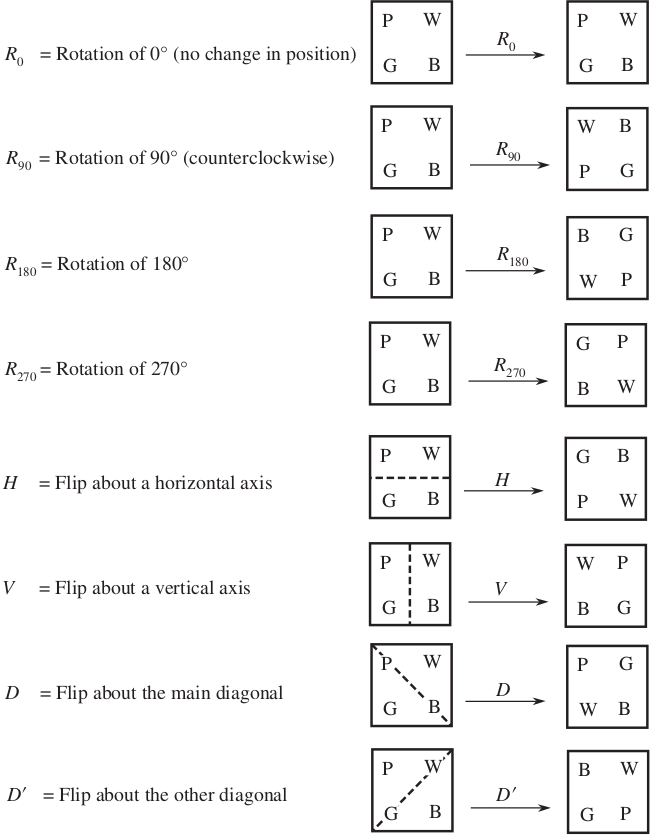

Exercises on Group actions
Let σSn and with σAn the conjugate classes of the permutation σ of An respectevely in Sn and An. Prove that σSn coincides with σAn if there exists an odd permutation of Sn commuting with σ, otherwise
σSn = σAn ∪ {(1,2) σ (1,2)−1}An
Determine the number of conjugacy classes of A5 and the cardinality of each class.
For every permutation σ ∈ S3 calculate the stabilizer with respect to the conjugacy action of S3 onto itself. Verify that the order of S3 is equal to |Stσ| ⋅ |O(σ)|. Repeat the exercise with Sn.
Determine the center of the group D4 of square symmetries. Write the class equation for this group.
How many words of six letters can be formed by permutation of the letters of the word MATTER? Use the concepts of group action, orbit, stabilizer.
How many distinct bracelets can be made with four beads of different colors?
Repeat the previous exercies for a bracelet with two green and two yellow beads.
A factory makes cups with p vertical stripes with p prime, of r different colors. How many different cups can be produced? (assume equal-size stripes that can each get any color at all, independent of all the other colors chosen.)
Use Burnside’s lemma to anwer this question: How many striped flags are there having six stripes (of equal width) each of which can be colored red, white, or blue?
Calculate the centralizers of (12) and of (1234) of S4. Calculate the centralizers of (12) and of (12345) of S5.
Generalizer the previous point by calculating the r-cycles of Sn.
Solutions
We always have σAn ⊆ σSn so we only need to show the other inclusion. Let σ ∈ An. Suppose that σ commutes with odd permutation δ ∈ Sn (so that δσδ−1 = σδδ−1 = σ, used later on). Let τ ∈ σSn, τ = ασα−1, for some α ∈ Sn. If α ∈ An, then τ ∈ σAn; if α is odd then δα ∈ An, and τ = ασα−1 = αδσδ−1α−1 = (αδ)σ(αδ)−1, from which again τ ∈ σAn; Thus σSn ⊆ σAn hence σSn = σAn.
Suppose now that σ does not commute with any odd permutation. The the centralizer CSn(σ) of σ in Sn coincides with the centralizer CAn(σ) of σ in An. Owing to Corollary 7.15.7 and applying Lagrange Theorem: n = i * m where n = |An| and m = |C(An)(σ)|:
|σAn| = |An|/|CAn(σ)| = 1/2 ⋅ |Sn| / |CAn(σ)| = 1/2 ⋅ |Sn| / |CSn(σ)| = 1/2 |σSn|
Notice that any odd permutation has the form (1,2)τ for some permutation τ. Thus the conjugate class ((1,2)σ(1,2)−1)An of (1,2)σ(1,2)−1 in An coincides with {δσδ−1 | δ odd}. Note in particular that the fact that conjugacy in Sn is determined by cycle type means that if σ ∈ An then all of its conjugates in Sn also lie in An. Thus
σSn = {τστ−1, τ even} ∪ {τστ−1, τ odd} = σAn ∪ ((1,2)σ(1,2)−1)An
Note that (1 2) is an odd permutation and (1 2)−1 = (1 2). ■
In Sn, every permutation is conjugate to every other permutation of the same cycle type. Let's start to count the different cyclic structures of S5. The partition of the integer 5 are: 5, 4+1, 3+2, 2+2+1, 2+1+1+1, 1+1+1+1+1, 3+1+1. Note that the partitions 3 + 2 and 2 +3 are considered equal.
2+2+1 represents permutations like (a b)(c d) one element is left fixed, that is an even permutation.
2+1+1+1, corresponds to (a b) an odd permutation.
3+2 represents permutations like (a b c)(d e) nothing is fixed; (a b c) can be decomposed in terms of transpositions (a b c) = (a c) (a b); so we've and odd permutation.
3+1+1, corresponds to (a b c) which can be decompend in terms of transpositions (a b c) = (a c) (a b) so it is even.
4+1 which decomposed in traspositions (a b c d) = (a d) (a c) (a b), so it's odd.
5 corresponds to a 5-cycle which is an even permutation (a b c d e) = (a e) (a d) (a c) (a b).
1+1+1+1+1 is the identity which is even.
S5 has 7 conjugacy classes. There 4 conjugacy classes of even permutations in S5. This means that there are not fewer than 4 classes in A5. Some of these conjugacy classes can split. In A5, 5-cycle splits in two conjugacy classes in e.g:
(4 5)−1 (1 2 3 5 4) (4 5) = (1 2 3 4 5)
but (4 5) is odd; We have a total of five conjugacy classes in A5 namely those having as representatives: id, (123), (12)(34), (12345) and (1345). The cardinalies are calculated as in section 7.5 and are repsectevely: 1, 20, 15, 12, 12. Where for the 5-cycle classes we have splitted as found in the previous exercise
|σAn| = 1/2 |σSn|
so Binom(5 5) ⋅ 4!/2 = 12. ■
We have Stid = S3, St(12) = {id, (12)}, St(13) = {id, (13)}, St(23) = {id, (23)}, St(123) = {id, (123), (132)}, St(132) = {id, (123), (132)}. |O(σ)| = [g], where [g] is the conjugacy class of g ∈ S3. The class equation holds e.g. |O(123)| ⋅ |St(123)| = |S3| = 3 ⋅ 2 = 6. ■
The group D4 has order 8 and is generated by the rotation r and reflection σ; D4 = ⟨r,s⟩. The eight symmetries in D4 can be uniquely written as rjsi where j = 0, 1, 2, 3 and i = 0, 1. The group is governed by the relations
r4 = 1, s2 = 1, rsr = s
Fist the centre Z(D4) has to be non-trivial. Otherwise the class equation would say that
8 = 1 + a sum of even integers
which cannot be. Consider the reflection srj and take the square so that srjsrj = 1, then multiply by s−1 to get rjsrj = s for all j (s−1 = s), and then
rjs = r−j
In particular, r2s = rs−2. But r−2 = r2, since r4 = 1. So, r2s = sr2 Since r2 with the generators s and s of D4, it must lie in Z(D4).
Let's compute the conjugates of r. Since conjugate elements all have the same order and since r, r3 are the only elements in D4 of order 4, these two rotations form a complete conjugacy class. They are also not in Z(D4), because central elements only have themselves as conjugates. The group relations yield
rsr−1 = r2s
so the reflections s and r2s are conjugate. This also implies they are not in Z(D4).
We check now that rs and r3s are conjugates. By the group relations, s(rs)s−1 = rs = r3s. Hence these two elements are conjugate, and from this we see that they are not central either.
To conclude we need to check that s, r2s form a separate conjugacy class from that of rs, r3s. It suffices to check that s and rs are not conjugates. We could conjugate s by all eight elements of D4 and see that we never get rs, more wisely notice that j = 0, 1, 2, 3 and i = 0, 1
rjsi s (rjsi)−1 = rjsi s s−ir−j = rj r−j s = r2js.
which never equals rs.
We have seens that 1 and r2 make up the center of D4. And there are three conjugacy classes each of order 2. Namely,
{r2, r3}, {s, r2s}, {rs, r3s}
The class equation for D4 looks like:
|G| = |Z(G)| + ∑ |G|/|C(x)|
8 = 2 + 2 + 2 + 2Remark. Another way to see that s and rs are not conjugates is to think of the vertices of the square as the letters 1,2,3,4 respectevely. From this point of view, r is the cycle (1,2,3,4) and s the transposition (2,4) and D4 is the subgroup of S4 generated by r and s. Then
rs = (1,2,3,4) (2,4) = (1,2)(3,4)
Since s and rs have different cyclic structures this cannot be. ■
The group S6 acts on the set X made by all words with the 6 letters of the word MATTER, by permuting the letters, e.g,
(135)(26)MATTER = ERMTTA
Then |X| = 6! = 720. The anagrams of x = MATTER are ins its orbit O(x). The stabilizer of x is made by all permutations σ ∈ S6 such that
σ(MATTER) = MATTER
it coincides with all permutations that exchange the third and fourth letters. Thus the stabilizer has 2! elements, then,
|O(x)| = |S6|/|Stx| = 6!/2 = 360 ■
We must consider the action of the group D4 of the set of possible permutations of five colors say blue, white, pink, and green, which are 4! = 24. We consider D4 because you can flip the bracelet over obtaining the same one. The symmetries act this way
Using the Burnisde theorem we see that only the identity leaves each configuration fixed, then it results
s = 1/8 ⋅ (24 + 0 + 0 + 0) + (0 + 0 + 0 + 0) = 24/8 = 3 ■ fixed by rotations fixed by reflections In this case the possible permutations are 4!/2!*2! = 6. The identity fixes all 6 permutations, the rotation of 180° fixes 2 permutations, the reflections 2 permutations each
s = 1/8 ⋅ (6 + 2 + 0 + 0) + (2 + 2 + 2 + 2) = 16/8 = 3 ■ fixed by rotations fixed by reflections Let A4 act on itself by conjugation. We calculate the conjugacy classes of A4 in Example 7.5.11. The stabilizer is such that
St(x) = {g ∈ A4 : gxg−1 = x}
(123) and (132) are in different orbits (they are not conjugate in A4) but they each have stabilizer {(1),(123),(132)}, The same feature is true ofgand g−1 for every 3-cycle g ∈ A4. Applying |O(x)|*|St(x)| = |A4| to the elements of A4 we have
|O(123)| * |St(123)| = 4 * 3 = 12.
|O(id)| * |St(id)| = 12 * 1 = 12.
|O((12)(34))| * |St(id)| = 3 * 4 = 12.
Where St((12)(34)) = {id, (12)(34), (13)(24), (14)(23)}.
Note. If instead of conjugacy we used composition as the group action we'll have |O((123))| = 12 and |St((123))| = 1. ■
We examine first the problem from a combinatorics perspective. Consider the r = 5, p = 5, case where we represent a cup as "12345" each number represents a different color; if you rotate in front of you the cup so to have a different color you obtain "51234", "45123", "34512", "23451", so each configuration, excepts the 5 cups with beads of same color has 5 twins, so
(55 − 5)/5 + 5 = 629
we subtracted the 5 cups with same color and then added them at the end of the computation.
All "cup rotations" of a given stripe coloring are still the same coloring, so the group doing the acting here is cyclic group Zn = ⟨g⟩. Let X be the set of all possible cups. Clearly |X| = rp. Let a1, a2, ..., an a cup. Clearly the action of any fixed element ai ∈ G on a given cup yields the same cup. So the number of orbits is the same as the number of different cups. We now compute Xg for each g ∈ G. First
Xe = {x ∈ X| e * x = x} = X
So |Xe| = rp. Let g ≠ e. Since G is cyclic of prime order, g generates G. Then
Xg = {x ∈ X| g * x = x}
= {x ∈ X | gi * x = x, ∀i}
= {x ∈ X | ai * x = x, ∀a ∈ G}Therefore, Xg consists of all those cups which are unchanged by any permutation and these are precisely those which are of one color. Hence |Xg| = r ∀g ∈ G, g ≠ e. The Burnside Theorem then gives the number of different necklaces as
1/p [ rp + r + ... + r ] = 1/p[ rp + r(p − 1)] (p − 1 times) In particular, since the number is necessarily an integer, we get another proof of Fermat's little theorem that ap − a is always a multiple of p.
p divides rp + (p − 1)r thus p|rp − r, that is rp ≡ r (mod p). ■
There are 36 possible combinations. But the resulting flags are not all indistinguishable. The flags
(b, w, r, b, w, r) and (r, w, b, r, w, b)
are clearly the same just turned over.
Let X be the set of all 6-tuples; if x ∈ X, then
x = (c1, c2, c3, c4, c5, c6)
where each ci denotes either blue, red, or white. Let τ be the permutation that reverse all the indices:
(thus, τ “turns over” each 6-tuple x of colored stripes) The cyclic group G = <τ> acts on X; for a reflection τ2 = e so |G| = 2; Flags with 6 stripes are directly cups with p = 2, a = 33, i.e. G = Z2, as the previous exercise; the orbit of any 6-tuple x consists of either 1 or 2 elements: Either τ fixes x or it does not. Since a flag is unchanged by turning it over, it is reasonable to identify a flag with an orbit of a 6-tuple. For example, the orbit consisting of the 6-tuples
(b, w, r, b, w, r) and (r, w, b, r, w, b)
The number of flags is thus the number N of orbits; by Burnside’s lemma, N = 1/2 [Fix((1)) + Fix(τ)]. The identity permutation (1) fixes every x ∈ X, and so Fix((1)) = 36 (there are 3 colors). Now τ fixes a 6-tuple x if it is a “palindrome,” that is, if the colors in x read the same forward as backward. For example,
x = (w, w, r, r, w, w)
is fixed by τ. Conversely, if
x = (c1, c2, c3, c4, c5, c6)
is fixed, by τ = (16)(25)(34), then c1 = c6, c2 = c5, and c3 = c4; that is, x is a palindrome. It follows that Fix(τ) = 33, for there are 3 choices for each of c1, c2 and c3; if you double a 3 string flag you get a 6-stripe e.g rrg + grr = rrggrr. The number of flags are
N = 1/2(36 + 33) = 378. ■
The centralizer in S4 of C(12) = {id, (12), (34), (12)(34)}; C(1234) = {id, (1234), (13)(24), (1432)}. ■
Remember that "cyclic permutations" of the symbols in a single cycle give you gack the same element of Sn: (1 2 3 4) = (2 3 4 1) = (3 4 1 2) = (4 1 2 3).
In Sn C((12)) = {τ, (12) τ | τ permutations that fix 1 and 2}. τ is disjoint from (12) and so τ commutes with (1 2) ⇐⇒ the conjugate (1 2)−1 τ (1 2) is equal to τ. Generally if s and t are any two elements of Sn where neither one moves any sybmol moved by the other, then st = ts .
C((123 ... n)) = {(123 ... n)i, i = 0,..., n − 1} e.g (123)2 (123) (123)−2 = (123)2 (123) (123)−1 (123)−1 = (123)2 id (123)−1 = (123). ■